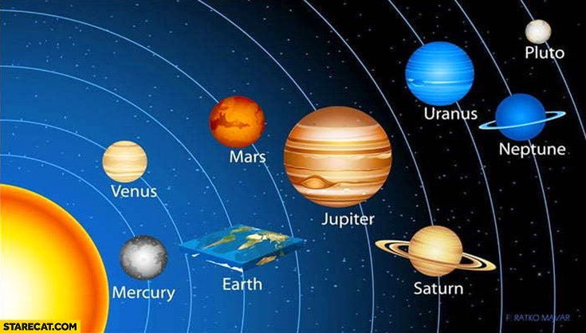

挑战 #572
圆即是方
爱丽丝（Alice）和鲍勃（Bob）生活在一个奇特的星球上：它既不是扁平的，也不是球形的，而是一个立方体！他们希望优化地表的有线连接，以尽量减少通信延迟。
该立方体的尺寸为 32x32x32，爱丽丝和鲍勃所居住的点坐标格式如下：[0,2,14] 或 [32,28,11]。可以看到，这些点确实位于他们星球的表面上。
为了尽量减少有线通信距离，爱丽丝和鲍勃需要找到一系列点对之间在地表上的最短距离。为了简化计算并仅保留整数值，期望得到每对点之间最短路径（地表上）距离的平方。
沿用前面的示例，点 [0,2,14] 与点 [32,28,11] 之间期望的最短距离路径为 3789。该路径途经点 [13,0,0]。
注意：提供的文件 un-cercle-est-un-carre.py 是响应服务的服务端代码。我们不提供 minimum_distance.py 文件。引用该文件是因为它用于验证您的答案：您的目标是编写 minimumDistanceOnCube 函数。

待研究文件：
../files/un-cercle-est-un-carre.py